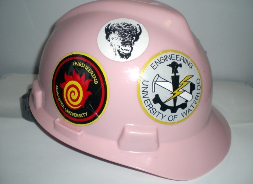

Hardhats
Hardhats have long been a symbol associated with engineering at many universities across Canada. However, no university uses the hardhat as such a major symbol as the University of Waterloo. There are nine unique hardhats that represent different positions or ranks used during Orientation Week and throughout the year. While you may not see many hardhats outside of Orientation Week, they're still there. People keep them and display them. They're worn for special occasions. They're remembered.
Earning a hardhat can be symbolic of the work you do. While most hardhats are awarded during Orientation Week for somebody's dedication as a leader, it usually also represents that student's leadership in other fields as well. Many EngSoc executives, directors, student teams captains and members, FedS volunteers, club executives and special events volunteers go on to earn some of the highest level hardhats.
Which hardhat somebody wears is a good indication of what that person is responsible for and who they are. The following are a description of each type of hardhat you'll see during Orientation Week, as well as a couple you may see elsewhere.
Yellow
The Yellow hardhat is reserved for incoming first year students who complete the Principles of Engineering during the Earn Your Hardhat event on the Tuesday of Orientation Week. It symbolises the incoming student's dedication and hard work during their life so far, their Orientation Week, and the years to come. An estimated 1,300 Yellow hardhats will be awarded this year.
Who gets one: Every first year student entering the Faculty of Engineering (this includes Software Engineering and Architecture) who completes the Principles of Engineering and takes the Plummer's Oath during Orientation Week.
What wearing it means: That the wearer is a plummer (a student in the Faculty of Engineering at the University of Waterloo).
Green
The Green hardhat is awarded to the Bigs during Orientation Week that prove their ability to dedicate and sacrifice themselves to their colour group and the first-year students they lead. It represents that leader's ability to be a leader and their dedication to Orientation Week. An estimated 300 Green hardhats will be awarded this year.
Who gets one: Every 'Big' student leader that participates in Engineering Orientation Week that completes their challenges alongside the first-year students in their colour group.
What wearing it means: That the wearer is a 'Big' for Orientation Week, has earned their Yellow hardhat and completed Orientation Leader Training.
Red
The Red hardhat is awarded to the few Huges during Orientation Week who prove their ability to organize their colour group, motivate their leaders and lead their team to victory. It symbolises the hard work they put into the week through organizing and leading their team, as well as their proven abilities as student leaders. Only an estimated 50 Red hardhats will be awarded this year, so those that wear one should be trusted and looked up to.
Who gets one: Every 'Huge' student leader that participates in Engineering Orientation Week, organizes and runs their colour group and participates in the Huge Hardhat Ceremony.
What wearing it means: That the wearer is 'Huge' for Orientation Week, has earned their Yellow hardhat, has completed Orientation Leader Training, has completed Huge training and is a trusted leader of their respective colour group.
Black
The Black hardhat is awarded to the rare student who proves themselves qualified and capable of being part of the Education Committee. It symbolises that the holder was hand selected for their position, and possesses the abilities to organize and run nearly every aspect of the week. The Black hardhat is a rare and desired item during Orientation Week, and the few who earn it deserve the respect due to them. Fewer than 40 Black hardhats will be awarded this year.
Who gets one: Every member of the Education Committee that participates in Engineering Orientation Week and participates in the Education Committee Hardhat Ceremony.
What wearing one means:That the wearer was hand selected to be a part of the Education Committee, has earned their Yellow hardhat, has completed Orientation Leader Training, has completed Education Committee Training, has proven themselves deserving of earning their hardhat and that they are deserving of respect.
Grey
The Grey hardhat is awarded to the organizers of the Architecture Engineering specific Orientation Week. It signifies they are a member of the Federation Orientation Committee, a top student leader, and possess the dedication to organize an Orientation Week between both the main UW campus and the Architecture campus in Cambridge. The wearers also deserve your utmost respect for the dedication they've shown to Orientation Week. Only 2 will be awarded this year; one to Jameela Derrick and the other to Brent Carson. Fewer than 12 exist in total, making them also one of the rarest hardhats.
Who gets one: The Federation Orientation Committee members for Architecture.
What wearing one means: That the wearer was selected to be part of the Federation Orientation Committee to represent Architecture, completed FOC training, developed and organized all Architecture Orientation Week programming, leads all Architecture student leaders, oversees their events, has completed Orientation Leader Training, Huge Training and Education Committee Training, has earned their Yellow hardhat, Green hardhat and Red hardhat and is deserving of your respect for the sacrifices they've made to Orientation Week.
The Cowboy
The Cowboy hardhat is awarded to the two organizers of Engineering Orientation Week itself known as the Superhuges. They are members of the Federation Orientation Committee, leaders of the Huges, and have worked with the Headcom (see below) since last year to produce the best Orientation Week possible. It symbolises the sacrifice they've made to Orientation Week and that they are to be respected. They, and the Headcom, are responsible for a bulk of what you experience during Engineering Orientation Week. Only 2 will be awarded this year; one to Nizar Hasan and the other to Cassandra Leal. A total of 10 exist, making them the second rarest hardhats.
Who gets one: The Superhuges.
What wearing one means:That the wearer was selected to be part of the Federation Orientation Committee to represent Engineering, completed FOC training, developed and organized all Engineering Orientation Week programming, leads the Huges and Bigs, oversees their events, has completed Orientation Leader Training, Huge Training and Education Committee Training, has earned their Yellow hardhat, Green hardhat, Red Hardhat and Black hardhat and is deserving of your respect for the sacrifices they've made to Orientation Week.
The Hellraiser
 The Hellraiser hardhat is awarded to the two organizers of Engineering Orientation Week itself known as the Headcom. They are members of the Federation Orientation Committee, leaders of the Education Committee and have worked with the Superhuges (see above) since last year to produce the best Orientation Week possible. It symbolises the sacrifices they've made to Orientation Week and that they deserve your respect. They, and the Superhuges, are responsible for a bulk of what you experience during Engineering Orientation week. Only 2 will be awarded this year; one to Sean O'Neill and the other to Stuart Pearson. A total of only 9 exist, making them the rarest of all hardhats.
The Hellraiser hardhat is awarded to the two organizers of Engineering Orientation Week itself known as the Headcom. They are members of the Federation Orientation Committee, leaders of the Education Committee and have worked with the Superhuges (see above) since last year to produce the best Orientation Week possible. It symbolises the sacrifices they've made to Orientation Week and that they deserve your respect. They, and the Superhuges, are responsible for a bulk of what you experience during Engineering Orientation week. Only 2 will be awarded this year; one to Sean O'Neill and the other to Stuart Pearson. A total of only 9 exist, making them the rarest of all hardhats.
Who gets one: The Headcoms
What wearing one means: That the wearer was selected to be part of the Federation Orientation Committee to represent Engineering, completed FOC training, developed and organized all Engineering Orientation Week programming, leads the Education Committee, oversees their events, has completed Orientation Leader Training, Huge Training and Education Committee Training, has earned their Yellow hardhat, Green hardhat, Red Hardhat and Black hardhat and is deserving of your respect for the sacrifices they've made to Orientation Week.
Other hardhats you may see around campus:
Pink

The Pink hardhat is awarded to the executive members of the Engineering Student Societies' Council of Ontario (ESSCO), which is a Provincial organization dedicated to communication and collaboration between all of Ontario's engineering students. Pink is the official colour of ESSCO, and the Pink hardhat represents that the wearer was nominated for and elected to one of the executive positions of council. Elections occur every summer, and the hardhats are usually passed from executive to executive, so new hardhats are rarely produced. These hardhats are usually covered in stickers from various schools, and are decorated, making them easily identifiable. Only two students at the University of Waterloo, Cameron Winterink and Alessia Danelon, currently hold executive positions with ESSCO, and therefore are the only holders of a Pink hardhat this year.
Who gets one: Executive members of the Engineering Student Societies' Council of Ontario
What wearing one means: That the wearer was nominated for and elected to an executive position within ESSCO.
Toolbearer
The Toolbearer hardhat is very similar to the Black hardhat, but no connection between the Education Committee and the Toolbearers can be inferred as they are completely separate groups. The Toolbearer hardhats (identifiable by the white Toolbearer crest on the front) are worn by the Toolbearers only while in the presence of The Tool. It is worn as part of the Toolbearer uniform and are not worn separately. It is unknown how many exist or where they come from.
Who gets one: Toolbearers
What wearing one means: That the wearer is a Toolbearer.